Recurso
Tema
Arquitectura del Computador
Arquitectura del Computador
Objetivo del recurso: PC.M.4 Reconocer y manipular adecuadamente los componentes internos y externos del computador, comprendiendo su funcionamiento y relaciones, para realizar tareas de ensamblaje, conexión y mantenimiento básico en el área de soporte técnico.
Introducción
El concepto de la arquitectura de las computadoras consiste en un conjunto de técnicas que permiten construir máquinas lógicas generales programables en forma práctica. En materia terminológica se distingue la "arquitectura" de un computador de la "organización" de un computador. Se puede decir que la arquitectura es la visión funcional (el conjunto de recursos que "ve" el programador), mientras que la organización es la forma en que se construye una cierta arquitectura en base a circuitos lógicos.
Este recurso educativo RED esta diseñado para estudiantes de segundo de bachillerato técnico en informática con el fin de mejorar el conocimiento sobre la arquitectura del computador interno y externo.

Sección
Arquitectura del computador
Interno
Las partes internas de una computadora son aquellas que no se encuentran expuestas a la vista comúnmente, sino que forman las “entrañas” del aparato ocultas dentro del CPU (del inglés Central Processing Unit o Unidad Central de Procesamiento). Su funcionamiento es totalmente esencial para el correcto comportamiento del sistema informático.
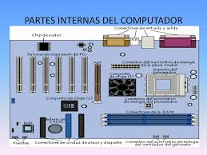
Partes internas de una computadora
Te explicamos cuáles son las partes internas de una computadora y cuáles son las características y funciones de cada una.
¿Cuáles son las partes internas de una computadora?
Los computadores, ordenadores o computadoras son una de las más potentes herramientas tecnológicas jamás inventada por la humanidad, cuyo lugar en nuestras vidas se ha hecho cada más indispensable con el pasar del tiempo. Trabajar, conocer gente, jugar, investigar…todo se hace a través de una de estas máquinas. Aquí hablaremos sobre sus componentes internos, es decir, sobre el hardware que opera sin necesidad de intromisión del usuario.
Las partes internas de una computadora son aquellas que no se encuentran expuestas a la vista comúnmente, sino que forman las “entrañas” del aparato ocultas dentro del CPU (del inglés Central Processing Unit o Unidad Central de Procesamiento). Su funcionamiento es totalmente esencial para el correcto comportamiento del sistema informático.
A continuación detallaremos los principales componentes de una computadora:
Procesador
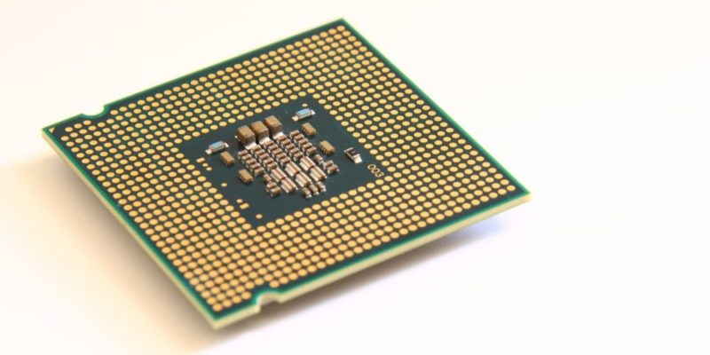
El procesador es un circuito electrónico que actúa como el cerebro lógico y aritmético de la computadora, ya que es allí donde se llevan a cabo los miles de millones de cálculos por segundo que sostienen el software entero.
Placa Base
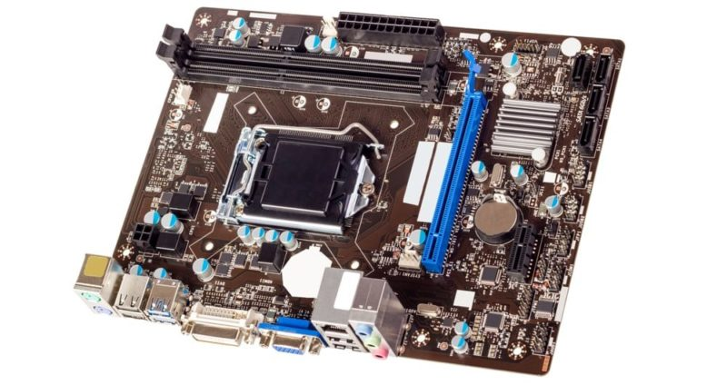
También conocida como la tarjeta madre, es la tarjeta principal del CPU, en donde se encuentra el procesador, las ranuras para la memoria RAM, los módulos de ROM y en donde se insertan directamente las demás tarjetas del sistema.
Se trata de una serie de circuitos en una misma plataforma, que hacen de núcleo del sistema, integrando sus distintos componentes internos. Es allí donde se encuentra el Firmware, o sea, el software pre programado de fábrica en el sistema.
Fuente de poder
El corazón del sistema, que suministra energía eléctrica a la Placa base y a todos los demás componentes del CPU, de modo que puedan operar cuando se los necesite y que puedan mantener ciertos sistemas básicos e indispensables andando cuando el computador se encuentre apagado.
Memoria RAM

Su nombre proviene de las siglas de Random Access Memory o Memoria de Acceso Aleatorio. Son una serie de módulos conectados a la Placa base, adónde van los programas a ejecutarse, tanto los activados por el sistema como los activados por el usuario. Sin embargo, todo lo que se encuentre en la memoria RAM se borrará cuando el sistema se apague o se reinicie.
Disco rígido
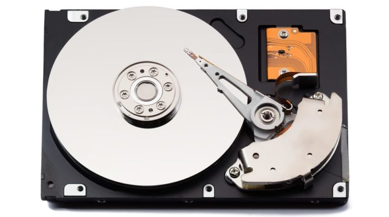
También conocido como disco “duro” (por traducción de Hard disk), se trata del lugar donde se almacena la información permanente del sistema informático, o sea, todo el software contenido en él, desde el Sistema Operativo mismo, hasta los programas o aplicaciones que instalemos sus usuarios.
Tarjeta de video
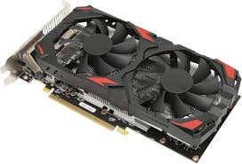
La Tarjeta de video o Placa de video es una tarjeta secundaria, conectada a la Placa base, que se especializa en el procesamiento de la información referente al video, o sea, a la emisión de imágenes y movimiento en monitores, proyectores, etc.
Dependiendo de sus capacidades, por lo tanto, podremos tener mayor calidad de imagen y más rápidas animaciones, o incluso efectos tridimensionales o resoluciones HD.
Tarjeta de sonido
Similar a la Placa de video, la Placa de sonido va integrada a la Placa base, pero sus labores se especializan en el procesamiento de las señales de audio, o sea, en la calidad, velocidad y nitidez de las emisiones sonoras y musicales que el sistema sea capaz de emitir, lo cual es clave a la hora de ver películas, jugar juegos, etc.
Tarjeta de red
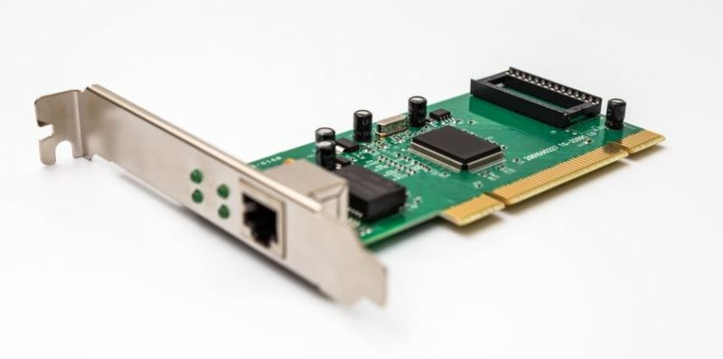
El tercer tipo de tarjeta que suele hallarse enclavado en la Placa base es la Placa de red, que es un administrador de las conexiones informáticas que el sistema puede establecer con redes o directamente con otros computadores.
Ventilador
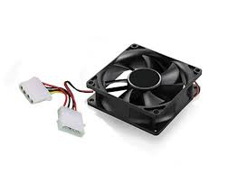
Debido al elevado tráfico de corriente y de información dentro del sistema, el CPU es un lugar muy caluroso, por lo que siempre es necesario un disipador de calor, en forma de ventilador.
Este artefacto extrae el aire caliente y permite que las temperaturas internas disminuyan, ya que un sobrecalentamiento detendría el sistema y podría incluso dañar permanentemente algunos de sus delicados componentes.
Actividad
Unidad
Actividad
Actividad de Verdadero y Falso
arquitectura externa del computador
Partes externas de una computadora y sus funciones
Monitor
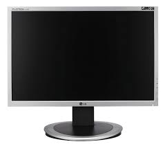
También llamado pantalla, es un componente esencial; pues de alguna manera es la ventana del usuario para ejecutar y observar las actividades necesarias. Este es un dispositivo de salida, pues es el que permite al usuario ver todos los procesos del equipo.
El monitor funciona gracias a los gráficos que los componentes del equipo han codificado y muestran a través de este componente. Es mediante este componente que el usuario entiende, vigila y gestiona los procesos del computador.
Armazón
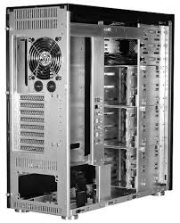
Es la carcasa o gabinete del CPU. En este cajón, se integran todos los componentes internos del equipo y a su vez se conectan las partes externas del mismo, Este componente viene a representar la estructura base del computador; lo que lo mantiene a todo unido y en funcionamiento.
Esta estructura se compone de diversos materiales: plástico, aluminio, acero, entre otros. Los modelos o estilos de armazón son muy variados y responden a la cantidad de componentes internos del equipo.
Teclado
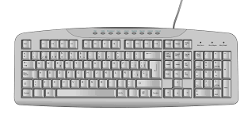
Este es un componente de entrada de información. A través de este periférico el usuario podrá ingresar órdenes y datos en la computadora. En este componente, se encuentran diversidad de comandos, que van desde los más básicos como lo son las letras, hasta los más complejos como lo son las funciones. Mediante el teclado es posible escribir, también aplicar comandos y acceder a funciones del equipo. Su función principal es establecer una comunicación fluida desde el usuario hacia las diferentes acciones que se puede realizar en el computador.
Mouse
Este es otro componente externo de entrada de información que funciona como un periférico del computador. La función del mouse o ratón es primordial en el control de las actividades que se pueden realizar en el computador. Este dispositivo es el apuntador que permite al usuario dirigirse a cualquier área en la interfaz y seleccionar programas, espacios, funciones y mucho más.
La característica más destaca del mouse es que tiene amplia libertad de movimiento. Existe distintos tipos de mouses:
Alámbricos e inalámbricos
Mecánicos, láser y ópticos
Los mouses alámbricos pueden conectarse a través de un puerto USB o PS//2; mientras que los inalámbricos se conectan vía bluetooth.
Bocinas
También llamados altavoces, altoparlantes, parlantes. Son componentes periféricos mediante los cuales se reproducen los sonidos de la computadora: errores, música, audios y más. No constituyen un elemento esencial para el funcionamiento del equipo, pero es bastante útil. Este dispositivo convierte las ondas eléctricas e información electrónica en ondas acústicas.
Cámara Web
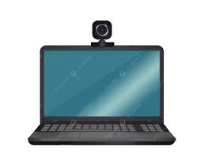
Este es un dispositivo de entrada de información, pues capta imágenes de manera directa hacia la computadora, en forma de video o fotografía según el comando del usuario. Este periférico no es esencial para el funcionamiento del computador; sin embargo, es útil para la realización de ciertas actividades, como por ejemplo reuniones virtuales o videollamadas.
Micrófono
Es un componente de entrada de información hacia el computador, concretamente de audio. No es un dispositivo esencial para el funcionamiento del computador, pero es de utilidad para llevar a cabo ciertas actividades: llamadas, grabaciones de sonidos, entre otras.
Puertos y conectores
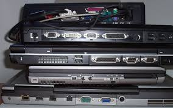
Éstos son componentes están integrados en el armazón del ordenador y son el contacto directo con los elementos internos del mismo. Tienen una función primordial, pues son los que establecen la relación entre los dispositivos periféricos como: mouse, teclado, monitor y más; y los componentes internos del equipo que procesan y transmiten los datos.
Actividad
Evaluación Final
Evaluación Final
Obra publicada con Licencia Creative Commons Reconocimiento Compartir igual 4.0